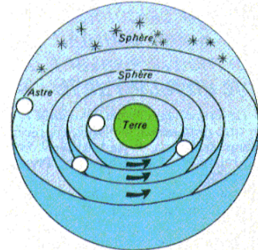
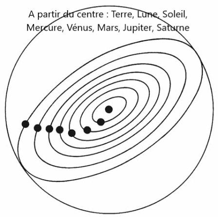
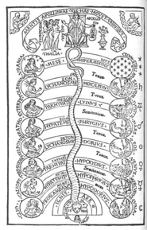
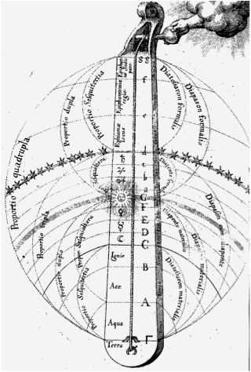

La représentation du mouvement des astres au temps de Cicéron
En observant le ciel+, les Anciens - dont Archimède - identifiaient deux types d'objets célestes :
- ceux qui paraissent immobiles ; appelés « étoiles »
- ceux dont ils distinguaient les mouvements, « planètes »+, ou « astres errants ». Les Grecs en comptaient sept.
Le Soleil se lève à l'Est et se couche à l'Ouest. Le Soleil a un mouvement circulaire autour de la Terre, au fur et à mesure de l'avancement de la journée.
C'est un référentiel géocentrique : le Soleil tourne autour de la Terre, qui est conçue comme une surface plane et ronde à l'époque, non comme un globe+ car elle est compatible avec le monde connu : la représentation ci-dessous est à lire en visualisant la surface verte comme une surface ronde, vue de dessus.
Astres errants et étoiles fixes
Représentation schématique du modèle cosmologique adopté dans le Timée
Pythagore décrivaient les mouvements des planètes tous uniformément circulaires et symétriques par rapport à la Terre, immobile au centre du monde. Ils étaient donc soumis à un principe à double mouvement, composé à la fois de la révolution propre de chaque planète et leur « mouvement diurne ».
La conception du Monde selon Archimède…
Cicéron, à plusieurs reprises, mentionne son admiration pour Archimède (*)Archimède de Syracuse (287-212 av. J.C.).
Le Syracusain exploitait, comme Platon le fera dans son Timée, les théories de Pythagore : celui-ci avait eu, le premier, l’idée d’expliquer le mouvement apparent du Soleil et des planètes+ par la combinaison de deux rotations uniformes autour du centre de la Terre.
A partir des différents mouvements décrits par Pythagore, il conçut un traité de mécanique, la Sphéropée, et l’appliqua en réalisant une sphère qui représentait le cours de la lune, du soleil, des cinq planètes connues des anciens (Mercure, Vénus, Mars, Jupiter et Saturne). Telle était la conception du monde+ que pouvait visualiser Cicéron, grâce à son ami Posidonius qui possédait une des sphères construites selon la technique d’Archimède. Conscient de l’apport d’Archimède, il souligne l’immortalité permise par la transmission de ses inventions :
On étudia [grâce à lui] les étoiles, tant celles qui sont fixes, que celles qu’on appelle errantes, quoiqu’elles ne le soient pas. Quiconque découvrit les diverses révolutions des astres, fit voir par là que son esprit tenait de celui qui les a formés dans le ciel.1.
Pour Cicéron, Archimède a en quelque sorte exécuté le plan du dieu premier, par qui Platon dans le Timée fait construire le monde. Autant les révolutions célestes sont l’ouvrage du dieu “fabricator”, autant la sphère d’ArchimèdeLa machine d'Anticythère est l’ouvrage d’un esprit divin.
Cette perfection que seul le « démiurge » premier peut insuffler est à rapprocher de la notion d'harmonie.
La théorie de l’harmonie+ des sphères
Cicéron, dans le Timée (8-27) 2 reprend cette idée selon laquelle l’harmonie+ dans laquelle se lit le cosmos+ est, comme le pensa le premier Pythagore, une notion de perfection qui établit – par le nombre - une relation entre organisation astronomique de l’univers et gamme musicale.
Il traduit ici fidèlement Platon qui reprend encore la pensée pythagoricienne que tout est nombre. Le nombre est pour lui la matière des êtres, ce qui leur donne forme et les rend intelligibles 3.
Pythagore avait découvert que les sons musicaux sont « gouvernés » par les nombres : la légende veut que ce soit en écoutant le martèlement des enclumes, qu’il eut l’idée de faire vibrer la moitié de la corde, tendue entre deux chevalets, le monocorde, pour obtenir un son plus aigu d’une octave que le son initial, puis avec les deux tiers de la corde, puis les trois quarts, ce qui donna un son haussé d’une quinte puis d’une quarte. Pour lui, le nombre structure les éléments, mais gouverne aussi leur composition et leurs relations.
Le cosmos+ est associé désormais à un échelle musicale : les plus hauts sons sont affectés à Saturne et aux étoiles fixes. Pour Philolaus (*)(mathématicien et astronome pythagoricien né en - 470 av. J.C.), le monde est l'harmonie et le nombre, et tout est ordonné dans des proportions correspondant aux trois intervalles fondamentaux de la musique : l’octave, la quinte et la quarte.
Platon reprend et développe cette idée, dans ses écrits : il existe selon lui une loi naturelle par excellence, qui dirige le microcosme comme le macrocosme, et assure l’harmonie du cosmos. Dans leur révolution, les sphères célestes produisent ainsi une musique, la Musique des Sphères, homologue à l'harmonie universelle.
Cicéron est familier de cette théorie, dont il veut voir une application dans la Cité, à travers la notion de « concorde » politique - il a été le héraut de la concordia ordinum. Il l'avait déjà développée dans « le Songe de Scipion » (Livre VI du De re publica, chap. 18), resté célèbre par le commentaire qu’en fit Macrobe (*)première moitié du Vesiècle. Il est attaché à l'idée selon laquelle
l’harmonie est à la fois source et manifestation de concorde, et la concordia universorum qu’il appelle de ses vœux pour écarter les risques d’une nouvelle guerre civile à Rome ne peut être que le reflet de l’harmonie universelle qui règne dans le cosmos.4
Quand il pense à ce dialogue du Timée, il se mettra à écrire ses Philippiques, où il rappelle cette corrélation entre harmonie et concorde. Dans son 13e discours contre Antoine du 20 mars 43, Cicéron montre que les négociations de paix proposées par Antoine n’étaient qu’un piège pour affaiblir la résolution du Sénat de continuer la guerre, en citant des exemples historiques dans lesquels la paix aurait été possible :
Cinna consentant à donner la main à Octavius, la république aurait pu subsister saine et entière. Et dans la dernière guerre, si Pompée eût relâché quelque peu de son excès de hauteur, César, beaucoup de sa grande ambition, il nous eût été permis d’espérer une paix solide, quelque ombre de république.5